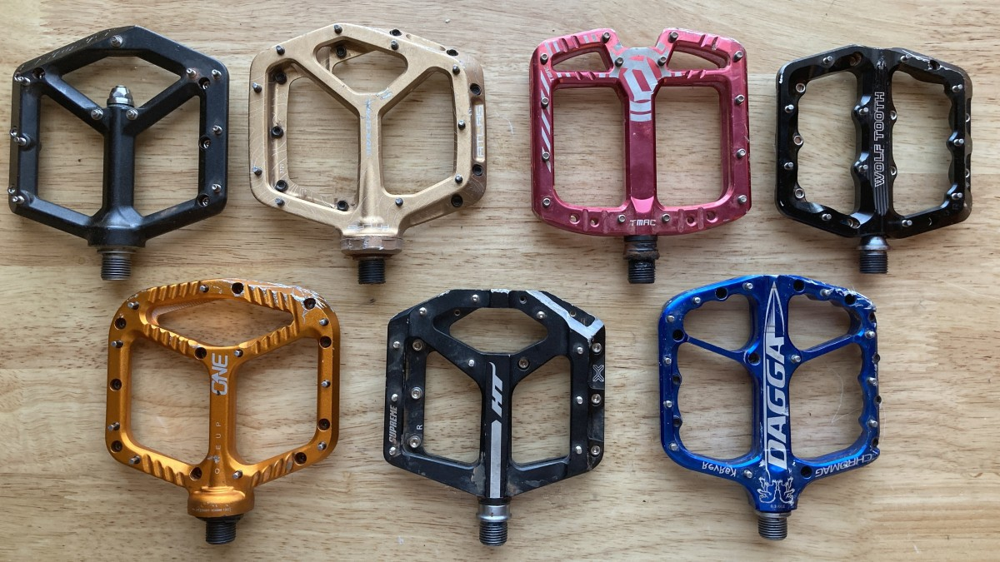

The pedal is the part of a bicycle that the rider pushes with their foot to propel the vehicle. It provides the connection between the cyclist's foot or shoe and the crank allowing the leg to turn the bottom bracket spindle and propel the bicycle's wheels.